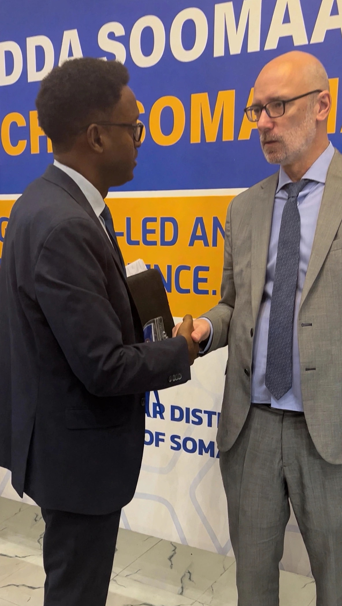

August 15, 2026
A Personal Moment Ahead of a Landmark Visit: Meeting DSRSG George Conway

I had the chance to meet directly with George Conway, the UN's Deputy Special Representative of the Secretary-General, Resident Coordinator, and Humanitarian Coordinator for Somalia, at the 9th Country Humanitarian Forum in Jowhar, the capital of Hirshabelle State, held November 10–13, 2025. It was a brief exchange inside a much larger gathering, but it's stayed with me since.
The timing is part of why it matters. This conversation came ahead of Conway's expected first visit to Laascaanood and the Northeastern State this summer, a trip I've written about elsewhere as a genuine landmark for our region. Having served as Minister of Humanitarian Affairs & Disaster Management, and later Minister of Planning & International Cooperation, for the Regional Government of North East, Somalia, I know how rare direct engagement of this kind has been. Conversations with the UN's senior humanitarian leadership are exactly what this region has needed for years, and too often gone without.
So when the moment came, I used it to restate a point I've made in meeting rooms and policy memos for a long time: the Standard Operating Procedure that governs how UN agencies formally work with Somalia's regional governments still favors our neighboring regional states, Somaliland and Puntland, while leaving SSC and the Northeastern State working around a document that was never built with us in mind.
The SOP needs to catch up with the realities on the ground, and with the Federal Government of Somalia's own constitutional recognition of the Northeastern State.
That's not a small technical complaint. An SOP decides who gets consulted, whose data gets counted, whose priorities shape a response plan before the ink is even dry. A region can be constitutionally recognized by Mogadishu and still be functionally invisible to the agencies delivering aid on the ground, simply because the paperwork hasn't caught up.
I don't know yet whether one conversation moves a document that entrenched. Conversations like it rarely move things by themselves. But they are how the moving starts: a case made plainly, in person, to someone positioned to act on it. If Conway's visit to Laascaanood does happen this summer as expected, I'll consider Jowhar the place where that particular door first opened, even if just a crack.